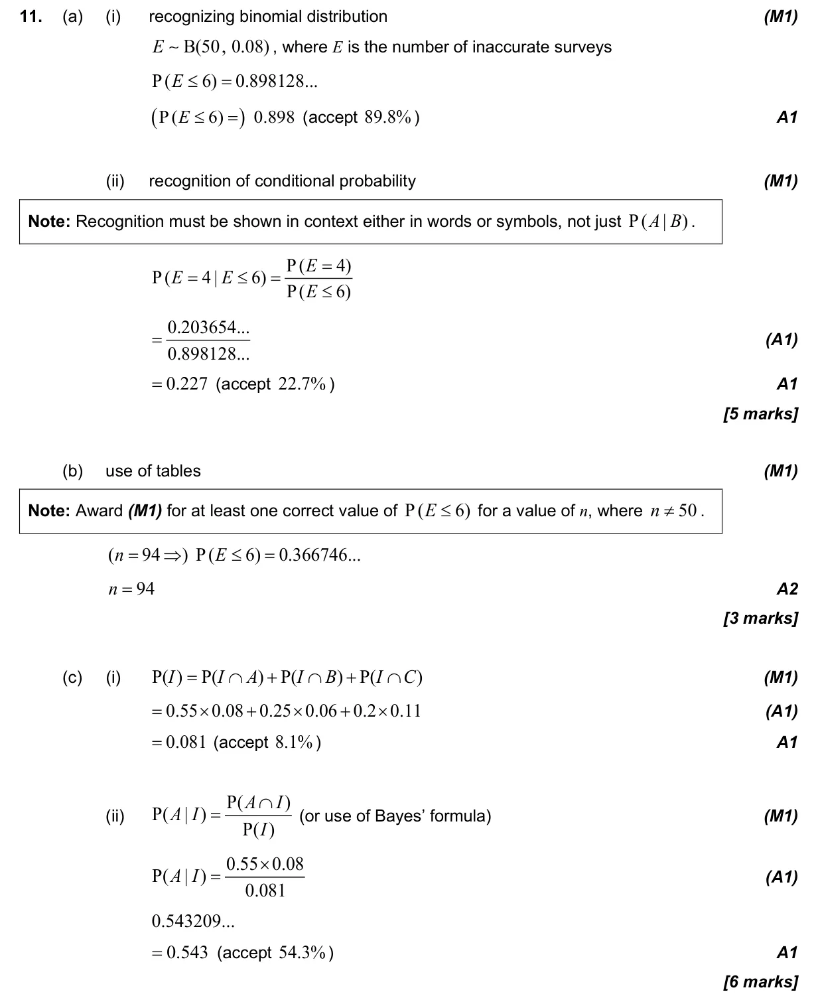
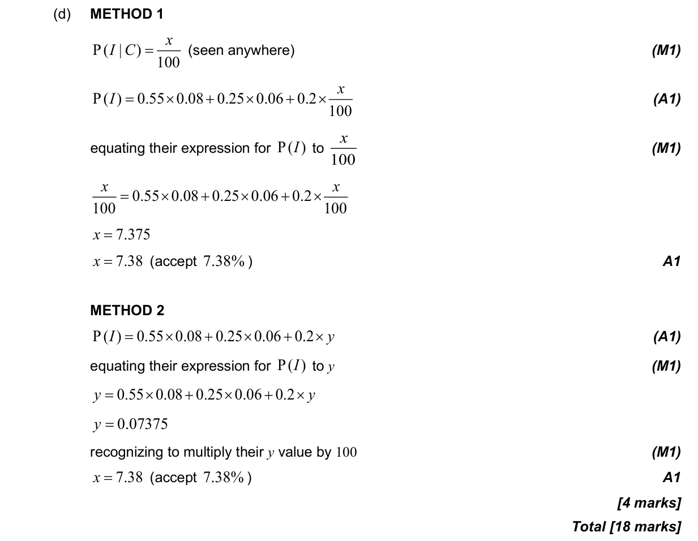

4.6 Combined, mutually exclusive, conditional, independence and probability diagrams4.8 Binomial distribution4.13 Bayes' theorem4.11 Formal conditional probability and independence
Question

Markscheme

